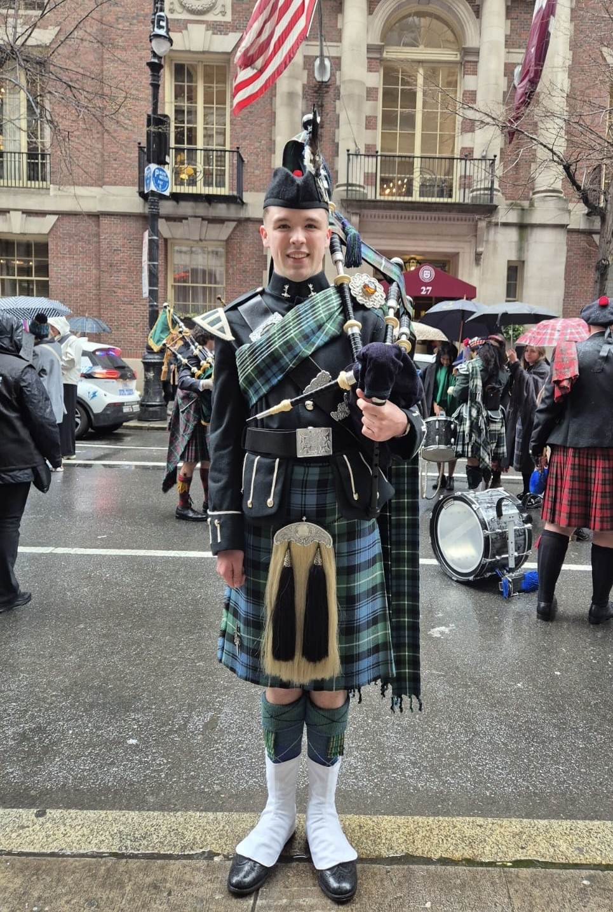

Mu Dhèidhinn
The Highland bagpipe is one of the few instruments that carries a culture within it — a language, a history, and a ceremonial weight that most tuition never addresses. Ceòlmhor was founded on the conviction that teaching the instrument without teaching that context is to teach it incompletely. The curriculum is built accordingly: structured, progressive, and rooted in the Gàidhlig tradition from the first lesson to the last.
That same conviction extends to performance. Every engagement — whether a wedding ceremony in Edinburgh, a Burns Supper in the Borders, or a corporate occasion anywhere in Scotland — is approached with knowledge of what the music carries and what the occasion demands. Ceòlmhor does not simply provide a piper. It brings the full weight of the tradition to bear on every moment that deserves it.
"The music and its language were never separate things to me."
— Felix Walker
Gàidhlig is present in the music itself. The cadences of pipe melody, the phrasing of a slow air, and the structure of Pìobaireachd all carry the rhythmic and tonal patterns of spoken Gàidhlig in ways that are not incidental but foundational. To understand the language, even partially, is to hear the music differently. At Ceòlmhor, that relationship is acknowledged throughout the curriculum — not as an academic exercise, but as the living context from which the instrument cannot be separated.

I began on the practice chanter with Fèis Dhùn Èideann — Edinburgh's Gaelic arts festival and tuition organisation — at a time when I was also attending the Gaelic Medium Education primary school in the city. The two things shaped each other. The language and the music arrived together, and I have never thought of them as separate.
The pipes came later — a Christmas present that changed the direction of my musical life. What followed was a balance between school-based tuition, which gave me pipe band grounding and a modern outlook, and Fèis tuition, which kept the traditional and Gàidhlig emphasis at the centre. That balance is what makes me the piper I am today.
Ceòlmhor grew out of that formation — a teaching practice built on the conviction that the instrument and its tradition are inseparable, and that students deserve to be taught both.